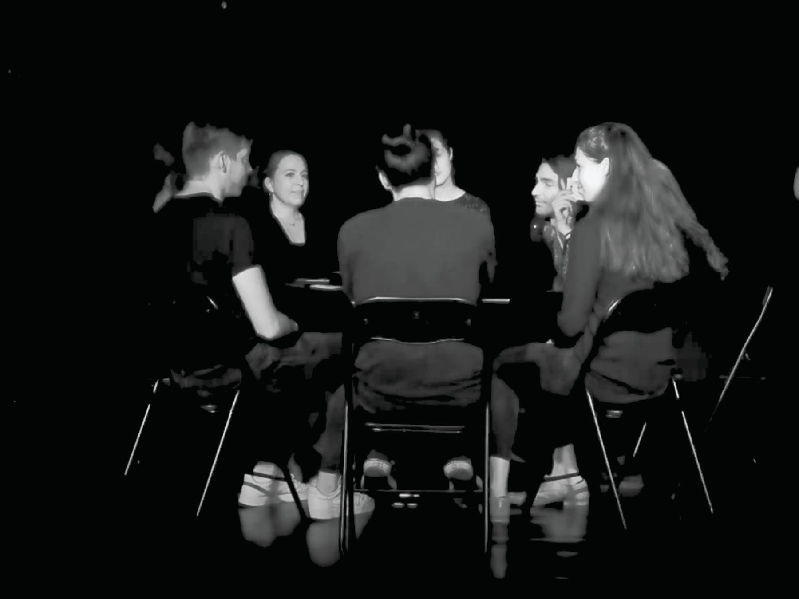
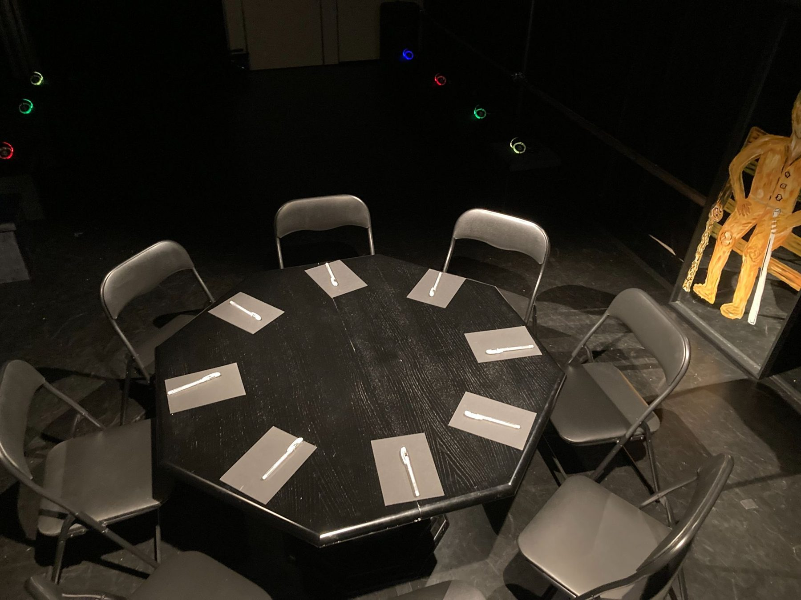
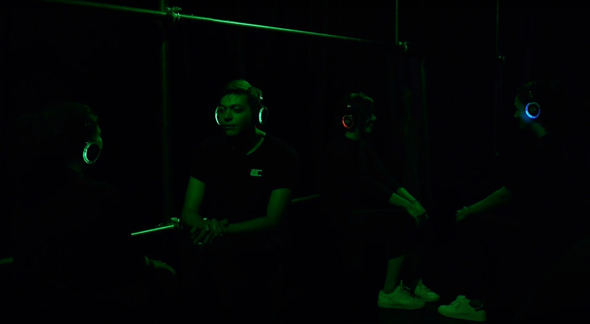
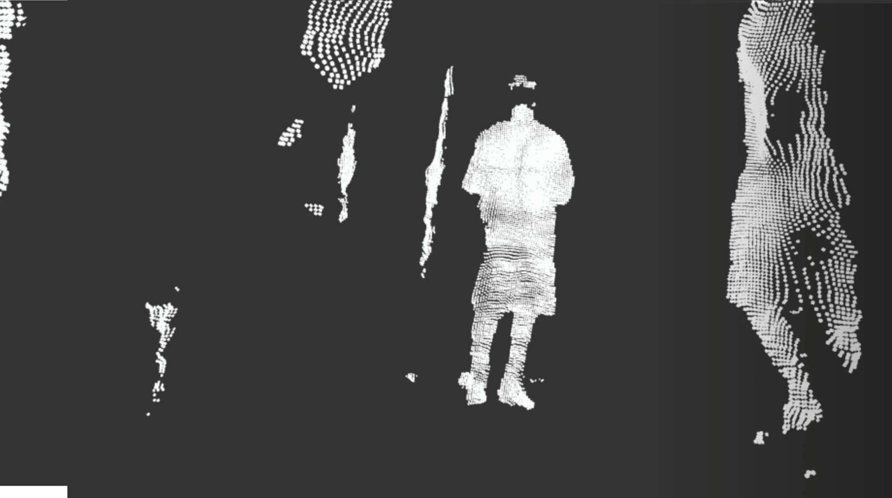
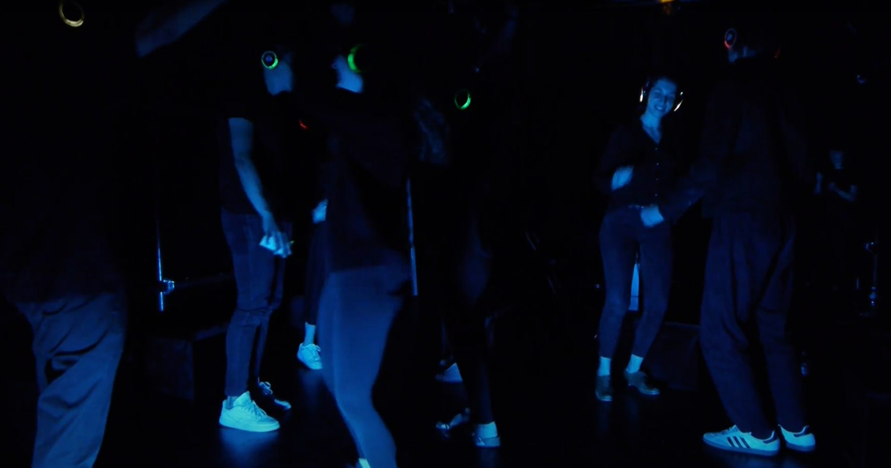

Qualia
Can you ever really convey what you sense to someone else?
Qualia is the philosophers' word for how an experience feels from the inside: the redness of red, the sound of a voice, the weight of a glance. Everyone has them. Nobody can hand them over.
The performance takes that problem seriously. A group of strangers tries to share what they perceive, in words and without them, and discovers how far one mind can reach another. Someone else in the room is trying too.
CreatedResidency at La Générale, Paris
PremiereOpened the 5th Tel Aviv International Theatre Festival, representing France, September 2023




